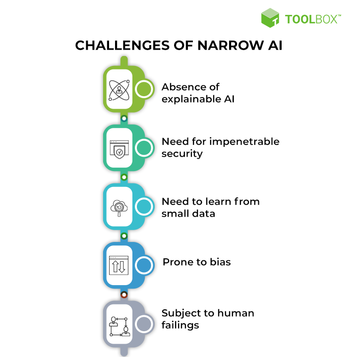

Advantages and disadvantages of narrow AI
Advantages
Narrow AI systems can perform single tasks well, often better than
humans. A weak AI system designed to identify cancer from X-ray or
ultrasound images, for example, might be able to spot a cancerous mass
in images faster and more accurately than a trained radiologist.
Meanwhile, a predictive maintenance platform could analyse incoming
sensor data in real time, a feat virtually impossible for a person or
group of people to do, to predict roughly when a piece of a machine
will fail.

Disadvantages
Still, narrow AI systems can only do what they are designed to do and
can only make decisions based on their training data. A retailer's
customer-service chatbot, for example, could answer questions
regarding store hours, item prices or the store's return policy. Yet,
a question about why a certain product is better than a similar
product would likely stump the bot, unless its creators took the time
to program the bot to respond to such questions specifically.
Meanwhile, AI systems are prone to bias, and can often give incorrect
results while being unable to explain them. Complex models are often
trained on massive amounts of data -- more data than its human
creators can sort through themselves. Large amounts of data often
contain biases or incorrect information, so a model trained on that
data could inadvertently internalize that incorrect information as
true.
The model would make skewed predictions, yet its users, unaware it was
trained on biased data, wouldn't know the predictions are off.
